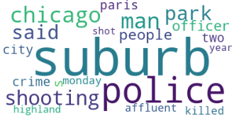

Résultat : anglais
Le nuage de mots ci-dessous présente les contextes du mot "suburb" dans le corpus anglais. Il nous permet de saisir l’emploi assez géographique du terme ("Paris", "Chicago", "city"), mais également l’émergence d’autres mots relatifs à la police et la violence.

Si on s’intéresse plus précisément aux cooccurrents du mot suburb, on obtient le graphe suivant sur iTrameur.:
Paramètres : FQMax = 13, Co-Freq = 2, IndSPMin = 8, 15 termes à gauche et à droite
On retrouve la sémantique géographique de suburb dans les termes "northern", "parisian" ou encore "Chicago", qui sont particulièrement cooccurrents du mot choisi. Néanmoins, "suburb" apparaît en coocurrence du terme "affluent" (prospère) ou "airbnbs", ce qui semble révéler une autre représentation charriée par le mot choisi, moins dans son ancrage territorial que dans le niveau de vie de ceux qui y vivent et de la présence de logements en location de courte durée dans ces zones. Le champ sémantique de la police et de la violence n’apparaît pas ici, ce qui semble signifier qu’il n’apparaît pas en cooccurrence avec "suburb" dans le corpus.
Pour mieux comprendre la connotation du mot "suburb" dans notre corpus, on s’intéresse au réseau de cooccurrences.
Paramètres : FQMax = 10, Co-Freq = 4, IndSPMin = 8, 8 termes à gauche et à droite
Le réseau de cooccurrence permet de visualiser un lien entre la banlieue décrite comme prospère ("affluent") et les enjeux de restriction ("restrict") des airbnbs ("airbnbs"), en rapport avec les touristes ("tourist") et les zones côtières ("coastal"). Dans le corpus, le champ sémantique de la violence ("shooting fatal", "crime scene", "with knife") et de la police ("police officer" "shot killed") n’apparaissent pas en lien direct de cooccurrence avec "suburb".
Ainsi, si le corpus semble plutôt organisé autour de la question de la violence et de la police dans le nuage de mots, il apparaît que le mot suburb y est en fait plutôt associé à des problématiques de gestion de la location immobilière de courte durée dans des zones prospères, parfois côtières, où les touristes affluent. Le corpus anglais permet ainsi de saisir la double dimension du champ sémantique de la banlieue, qui semble dépendre notamment du niveau de richesse de celle-ci. Ceci peut notamment s’expliquer par la large couverture territoriale de la presse anglaise, qui s’étend bien au-delà d’un seul pays. Le "suburb" n’apparaît donc pas ici spécifiquement lié à une ville : même si Chicago semble occuper une place de choix dans le corpus, les champs sémantiques de la violence et des airbnbs n’apparaissent pas territorialisés, dans le réseau de cooccurrence. Ainsi, la banlieue apparaît ici plutôt comme un concept dont les représentations sont associées au crime ou au tourisme sans qu’on puisse localiser ces représentations.
Quelques exemples de contextes :